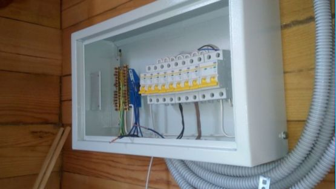
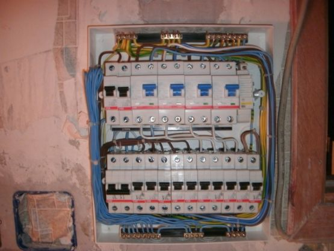
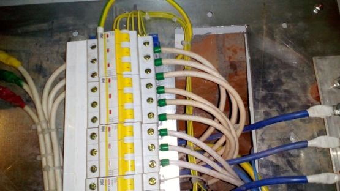
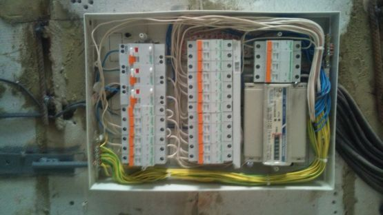
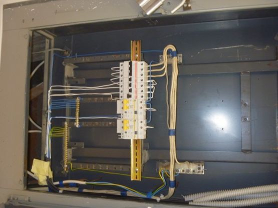

Качественный электромонтаж, Стаж 12 лет. Частный электрик, недорого.
Тел. 8 904 642 08 57. Николай.

Мастер по монтажу электрошита.
Создание или замена систем электроснабжения – это непростая задача, в независимости от того, строите ли вы дом «под ключ», делаете капитальный ремонт или решили поменять проводку.
Монтаж электрощитов – важный этап, от правильности выполнения которого во многом зависит качество электроснабжения вашего дома, квартиры или офиса.
Цена.
Бригада частных мастеров поможет вам произвести монтаж любых электрощитов в кратчайшие сроки и по самым оптимальным ценам - от 3000 руб. за штуку.
Подготовка.

Перед началом монтажа электрощитов, необходимо разобраться, какой щит наилучшим образом подойдет именно вам - наружный или внутренний. Также полезно определиться с местом его расположения, провести необходимые расчеты и измерения. Можно посоветоваться с дизайнером, если вы опасаетесь, что щит будет портить интерьер, смотреться негармонично.

Монтаж внутреннего (скрытого) электрощита.
Если в вашем доме, квартире или офисе скрытая (убранная в стену) электропроводка, логичнее будет произвести монтаж внутреннего электрощита. Он более компактный, минимально вступает над поверхностью стены и выглядит весьма эстетично.

Если включить фантазию, такой щит может стать интересным элементом декора и гармонично вписаться любой интерьер.
Перед монтажом внутреннего электрощита в стене выдалбливается ниша, соответствующая его размерам. Электрощит помещается в нишу и укрепляется при помощи винтов и строительного алебастра. Когда прибор закреплен в нише, можно преступать к его сборке и подключению, а также декорированию стены.

Помните: монтаж внутреннего электрощита возможет только при наличии достаточной толщины стены, в которую его планируется поместить. Обязательно измерьте толщину стены и глубину предполагаемой ниши, Если соотношение параметров вызывает сомнения – посоветуйтесь со специалистами, чтобы найти оптимальное решение.
Монтаж наружного электрощита.

Если в вашем доме или офисе наружная электропроводка - имеет смысл установить наружный (накладной) щит. Монтаж такого электрощита значительно проще. Перед началом работ нет необходимости готовить специальные ниши в стене. Достаточно выбрать место расположения, закрепить на стене при помощи дюбель-гвоздей или саморезов, собрать и подключить.
Сборка электрощита – это процесс комплектации его необходимыми элементами. Устанавливаются монтажные планки, заземляющие и нулевые шинки, автоматы и УЗО, аккуратно и красиво выкладываются монтажные провода. Сложность заключается в том, чтобы правильно подключить необходимые элементы.
Хотим еще раз обратить ваше внимание на то, что монтаж электрощита, неважно - наружного или внутреннего - необходимо проводить с осторожностью.
Если вы плохо представляете, как это делается – не рискуйте, пригласите электриков.
Потраченные деньги не идут ни в какое сравнение с возможными последствиями неправильного монтажа электрощита. Выбирайте комфорт и надежность для себя и своих близких.

Сделать электрику в квартире.
Расценки на электропроводку квартир.
Провести электропроводку в новостройке.
Электромонтаж в частном доме.
Электрика в загородном доме.
Сколько стоит замена электропроводки в двухкомнатной квартире?.
Сколько стоит проводка в 3 ком квартире?
Сколько стоит проложить проводку в четырех комнатной квартире?
Сколько стоит сделать внутреннюю проводку?
Стоимость штробление стен.
Электромонтаж двухкомнатной квартиры.
Замена электропроводки в панельном доме.
Электромонтаж проводов в бане.